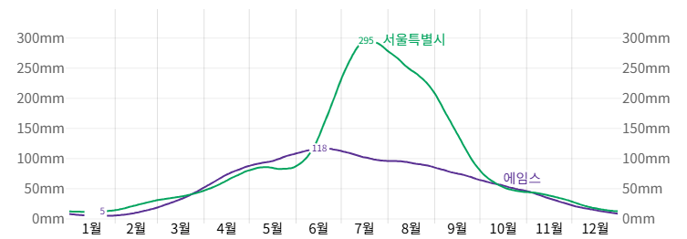
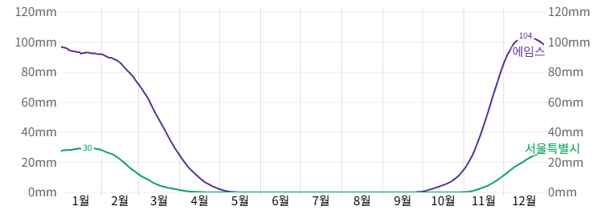

최신 리모델링 매물
6
수영장 매물
8
미입주 가구
78
| Index | 속성명 (EN) | 속성명 (KR) | Type |
|---|---|---|---|
| 0 | PID | 고유 식별자 | int64 |
| 1 | GrLivArea | 지상 생활 면적 | int64 |
| 2 | SalePrice | 주택 판매 가격 | int64 |
| 3 | MSSubClass | 건물 클래스 | int64 |
| 4 | MSZoning | 지역 용도 분류 | object |
| 5 | LotFrontage | 도로와 접한 길이 | float64 |
| 6 | LotArea | 대지 면적 | int64 |
| 7 | Street | 도로 유형 | object |
| 8 | Alley | 골목 포장 상태 | object |
| 9 | LotShape | 대지 형태 | object |
| 10 | LandContour | 대지 고도 형태 | object |
| 11 | Utilities | 공공 설비 이용 가능 여부 | object |
| 12 | LotConfig | 대지 구성 방식 | object |
| 13 | LandSlope | 대지 경사도 | object |
| 14 | Neighborhood | 이웃 지역 | object |
| 15 | Condition1 | 주변 환경1 | object |
| 16 | Condition2 | 주변 환경2 | object |
| 17 | BldgType | 건물 유형 | object |
| 18 | HouseStyle | 주택 스타일 | object |
| 19 | OverallQual | 전체 자재 및 마감 품질 | int64 |
| 20 | OverallCond | 전체 상태 | int64 |
| Index | 속성명 (EN) | 속성명 (KR) | Type |
|---|---|---|---|
| 21 | YearBuilt | 건축 연도 | int64 |
| 22 | YearRemodAdd | 리모델링 연도 | int64 |
| 23 | RoofStyle | 지붕 스타일 | object |
| 24 | RoofMatl | 지붕 재질 | object |
| 25 | Exterior1st | 외벽 재질 1 | object |
| 26 | Exterior2nd | 외벽 재질 2 | object |
| 27 | MasVnrType | 벽돌 베니어 유형 | object |
| 28 | MasVnrArea | 벽돌 베니어 면적 | float64 |
| 29 | ExterQual | 외벽 마감 품질 | object |
| 30 | ExterCond | 외벽 현재 상태 | object |
| 31 | Foundation | 기초 유형 | object |
| 32 | BsmtQual | 지하실 품질 | object |
| 33 | BsmtCond | 지하실 상태 | object |
| 34 | BsmtExposure | 지하실 외부 노출 | object |
| 35 | BsmtFinType1 | 지하실 마감 유형 1 | object |
| 36 | BsmtFinSF1 | 마감 지하 공간 면적 1 | float64 |
| 37 | BsmtFinType2 | 지하실 마감 유형 2 | object |
| 38 | BsmtFinSF2 | 마감 지하 공간 면적 2 | float64 |
| 39 | BsmtUnfSF | 미마감 지하 공간 면적 | float64 |
| 40 | TotalBsmtSF | 전체 지하 면적 | float64 |
| Index | 속성명 (EN) | 속성명 (KR) | Type |
|---|---|---|---|
| 41 | Heating | 난방 유형 | object |
| 42 | HeatingQC | 난방 품질 | object |
| 43 | CentralAir | 중앙 냉방 여부 | object |
| 44 | Electrical | 전기 시스템 | object |
| 45 | 1stFlrSF | 1층 면적 | int64 |
| 46 | 2ndFlrSF | 2층 면적 | int64 |
| 47 | LowQualFinSF | 낮은 품질 마감 면적 | int64 |
| 48 | BsmtFullBath | 지하 전체 욕실 수 | float64 |
| 49 | BsmtHalfBath | 지하 반 욕실 수 | float64 |
| 50 | FullBath | 지상 전체 욕실 수 | int64 |
| 51 | HalfBath | 지상 반 욕실 수 | int64 |
| 52 | BedroomAbvGr | 지상 침실 수 | int64 |
| 53 | KitchenAbvGr | 지상 주방 수 | int64 |
| 54 | KitchenQual | 주방 품질 | object |
| 55 | TotRmsAbvGrd | 지상 총 방 수 | int64 |
| 56 | Functional | 주택 기능성 | object |
| 57 | Fireplaces | 벽난로 수 | int64 |
| 58 | FireplaceQu | 벽난로 품질 | object |
| 59 | GarageType | 차고 유형 | object |
| 60 | GarageYrBlt | 차고 건축 연도 | float64 |
| Index | 속성명 (EN) | 속성명 (KR) | Type |
|---|---|---|---|
| 61 | GarageFinish | 차고 마감 상태 | object |
| 62 | GarageCars | 차고 차량 수용 수 | float64 |
| 63 | GarageArea | 차고 면적 | float64 |
| 64 | GarageQual | 차고 품질 | object |
| 65 | GarageCond | 차고 상태 | object |
| 66 | PavedDrive | 포장된 진입로 여부 | object |
| 67 | WoodDeckSF | 우드 데크 면적 | int64 |
| 68 | OpenPorchSF | 개방형 현관 면적 | int64 |
| 69 | EnclosedPorch | 폐쇄형 현관 면적 | int64 |
| 70 | 3SsnPorch | 3계절용 현관 면적 | int64 |
| 71 | ScreenPorch | 스크린 포치 면적 | int64 |
| 72 | PoolArea | 수영장 면적 | int64 |
| 73 | PoolQC | 수영장 품질 | object |
| 74 | Fence | 울타리 품질 | object |
| 75 | MiscFeature | 기타 부대시설 | object |
| 76 | MiscVal | 기타 부대시설 가치 | int64 |
| 77 | MoSold | 판매 월 | int64 |
| 78 | YrSold | 판매 연도 | int64 |
| 79 | SaleType | 판매 유형 | object |
| 80 | SaleCondition | 판매 조건 | object |
| 81 | GeoRefNo | 지리 참조 번호 | float64 |
| 82 | Prop_Addr | 부동산 주소 | object |
| 83 | Latitude | 위도 | float64 |
| 84 | Longitude | 경도 | float64 |
원본 데이터 결측치
| 컬럼명 (영문) | 컬럼명 (한글) | 결측치 수 |
|---|---|---|
| LotFrontage | 도로와 접한 길이 | 462 |
| Alley | 골목 포장 상태 | 2411 |
| MasVnrType | 벽돌 베니어 유형 | 1572 |
| MasVnrArea | 벽돌 베니어 면적 | 14 |
| BsmtQual | 지하실 높이 | 69 |
| BsmtCond | 지하실 상태 | 69 |
| BsmtExposure | 지하실 외부 노출 | 71 |
| BsmtFinType1 | 지하실 마감 유형 1 | 69 |
| BsmtFinType2 | 지하실 마감 유형 2 | 70 |
| FireplaceQu | 벽난로 품질 | 1241 |
| GarageType | 차고 위치 | 127 |
| GarageYrBlt | 차고 건축 연도 | 129 |
| GarageFinish | 차고 마감 상태 | 129 |
| GarageQual | 차고 품질 | 129 |
| GarageCond | 차고 상태 | 129 |
| PoolQC | 수영장 품질 | 2570 |
| Fence | 울타리 품질 | 2054 |
| MiscFeature | 기타 부대시설 | 2482 |
| Latitude | 위도 | 97 |
| Longitude | 경도 | 97 |
NaN 값이 상당히 많은 것을 알 수 있습니다.NaN이 ’없음’ 을 나타내는 데이터가 많음을 알 수 있었습니다.NaN 대신 ‘없음’ 이라는 명확한 표현으로 대체했습니다.
NaN이 없다는 의미를 나타내는 컬럼들입니다.
| 변수명 | 설명 (한글) |
|---|---|
| BsmtCond | 지하실 상태 |
| BsmtFinType2 | 지하실 마감 공간 유형 2 |
| BsmtExposure | 지하실 외부 노출 여부 |
| BsmtFinType1 | 지하실 마감 공간 유형 1 |
| FireplaceQu | 벽난로 품질 |
| GarageType | 차고 타입 |
| GarageFinish | 차고 마감 상태 |
| GarageQual | 차고 품질 |
| GarageCond | 차고 상태 |
| PoolQC | 수영장 품질 |
| MasVnrType | 벽돌 베니어 유형 |
| Fence | 울타리 품질 |
| MiscFeature | 기타 부대시설 |
| Alley | 골목 포장 상태 |
| BsmtQual | 지하실 품질 |
NaN 값을 ‘없음’ 이라는 단어로 채워주었습니다.주소는 있는데, 위도/경도가 없는 데이터가 있습니다.
| 컬럼명 (영문) | 컬럼명 (한글) | 결측치 수 |
|---|---|---|
| Prop_Addr | 부동산 주소 | 20 |
| Latitude | 위도 | 97 |
| Longitude | 경도 | 97 |
geopy.geocoders 라이브러리를 사용해서 geocoding 을 수행했습니다.논리적으로 오류가 있는 데이터가 있습니다.
df[df[‘YearRemodAdd’] < df[‘YearBuilt’]] 처럼계절별 강우량이 일정한 편
| 값 | 명칭 | 특징 | 강수량과의 관계 |
|---|---|---|---|
| CompShg | Composite Shingle (복합 아스팔트 기와) | ✅ 가장 흔함, 저렴하고 설치 쉬움, 15~30년 수명 | 💧 중간 이상 강수량에 적합, 물 잘 흐름, 내습성 양호 |
| Tar&Grv | Tar & Gravel (타르 + 자갈) | 주로 평지붕에 사용, 무겁고 유지보수 필요 | 💧 평지붕이라 배수 안 좋음, 강수량 많은 지역엔 비추천 |
| WdShake | Wood Shake (천연 목재 쉐이크) | 자연스러움, 고급스러움, 단열 효과 좋음 | 💧 습기에 약함, 강수량 많으면 부패·곰팡이 위험 |
| WdShngl | Wood Shingle (평평한 목재 기와) | WdShake보다 얇고 규칙적, 시각적으로 깔끔 | 💧 마찬가지로 강우에 취약, 유지보수 많음 |
| Metal | Metal (금속 지붕) | 고가, 튼튼, 긴 수명(40년 이상), 불연성 | 💧 강우·폭설 모두 우수, 완전 방수에 가까움 |
| Roll | Roll Roofing (롤 시트) | 저가, 시공 간단, 수명 짧음 | 💧 저렴한 평지붕용, 강수량 많으면 금방 닳음 |
| Membran | Membrane Roofing (방수 멤브레인) | 평지붕 방수용, 수명은 중간, 정기적 유지보수 필요 | 💧 방수엔 특화, 그러나 누수 위험 있음 (파손 시 치명적) |
겨울에 눈이 많이 오는 편
Ames 지역은 난방시설이 대부분 우수하고,
난방시설이 나쁜 주택이 거의 없음을 알 수 있습니다.